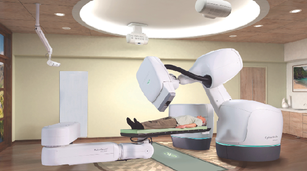

How Deadly Cruise Missiles Became the Lifesaving “CyberKnife”
Radiation and radioactive materials have been used in medical procedures for decades. Especially in the case of a brain tumor, radiation has the obvious advantage of eliminating the need to open the patient’s skull to operate on his brain —if it would work. But in the early years of the use of radiation to destroy tumors, treatments were often dangerous and the results unsatisfactory. In one letter in Igros Kodesh many years ago, the Rebbe MH”M advises someone to have surgery rather than radiation treatment because of the unreliability of the radiation treatment.

One problem had to with modeling the human body. Back in the 1990s, scientists discovered a very disturbing statistic regarding people who received radiation treatment to destroy cancerous tumors: “Each year, more than 100,000 cancer patients who are treated with radiation in hopes of a cure die with active tumors at the primary cancer site.” Not only was the radiation treatment not successful—the patient died—but the tumors remained intact; the radiation did not destroy them.
Research into the cause for this showed that a serious miscalculation had been made in determining how the radiation should be delivered. Scientists had modeled the human body simply as a “bag of water” and had directed the radiation toward a tumor at a certain location inside this bag of water. What this calculation ignored is the fact that radiation travels in different ways through different media such as muscle, bone, blood and air cavities inside the body. Furthermore, every time the radiation travels through an interface between two such media, it changes direction—just like light (electromagnetic radiation), traveling through the air, changes direction when it enters water. Thus, in many cases, the radiation had missed the tumor and left it intact.
“An Excellent Example of
Swords Into Plowshares”
Where were medical scientists going to get accurate calculations that could take into consideration the different media through which the radiation had to travel? In fact, the physicists at Lawrence Livermore National Laboratory (LLNL) had actually made such calculations in connection with their development of atomic bombs. These calculations were based on a mathematical theory called the “Monte Carlo Method,” a branch of probability theory. The Monte Carlo Method was developed by the atomic scientists and mathematicians working on the Manhattan Project to build the first atomic bomb.
In 1993, a research team at the Lawrence Livermore Laboratory, in collaboration with the University of California, San Francisco, applied the Monte Carlo Method to directing radiation to attack tumors. Their new method, called the “Peregrine System,” simulates the radiation treatment “particle-interaction by particle-interaction.” During treatment, a patient receives trillions of photons or particles of radiation. The Monte Carlo Method reconstructs the treatment by selecting a random sample of photon particles and tracking them through a computer model of the radiation delivery device and a 3-dimesional model of the tumorous region, based on a computed tomography (CT) scan of the patient. Everything that happens to the photons after they leave the x-ray machine—colliding with an electron in the skin, ionizing a hydrogen atom in the blood, perhaps being absorbed by calcium in the bone—is calculated in the model.
We believe that one can hardly find a better example of Swords into Plowshares than this—nuclear weapons science transformed for nuclear medicine. Bill Richardson, then Secretary of Energy, thought so as well. In a statement announcing the production and marketing of the Peregrine System, he said:
“Peregrine could change the way cancer is treated in America. This technology was developed through advances resulting from nuclear weapons research and with the multidisciplinary scientific expertise of a Department of Energy national laboratory. This is an excellent example of turning swords into plowshares.”
But there was still another problem. Assuming the body has been modeled accurately, the location of the tumor has been identified and the correct dose of x-ray radiation is then directed at the tumor, there is “collateral damage.” Healthy tissue around the tumor is destroyed along with the tumor. Physicians would administer small doses of radiation over weeks or months in order to allow healthy tissue surrounding the tumor to recover from the onslaught.
This collateral damage is a much more serious problem if the tumor is in the brain and healthy brain tissue is being destroyed.
A solution to this problem was developed by Dr. Lars Leksell of Sweden. He developed a technique, called stereotactic radiosurgery. The treatment relied on an external frame bolted to the patient’s skull from which approximately 200 beams of radiation from different directions were precisely directed to the tumor. In this way the tumor would be destroyed but the tissue surrounding the tumor would be spared. Dr. Leksell called this the Gamma Knife. The rigid frame was necessary so that the patients head would not move at all throughout the procedure. Small movements of the body are normal and cannot be avoided, but if the head moved even slightly, the tumor would no longer be in the line of fire of the radiation beams.
But bolting the skull was a problem in itself. As one science journal described it, the patients were required “to wear a cage-like contraption that was screwed into their skull to prevent them from moving during the procedure. Aside from its barbaric-looking appearance, it meant the Gamma Knife was only designed to be used on the brain.” It could not be used to treat tumors in other parts of the body since they could not be held rigidly. And there was a recovery period for the bolt wounds to heal.
So the problems with the Gamma Knife were: 1) It was only good for tumors in the head, 2) The patients head needed to be bolted to a cage to be kept stationary and 3) The bolting procedure necessitated anesthesia beforehand, and hospitalization after the treatment while the bolt wounds healed.
Persian Gulf War Technology
Surgeons are not the only ones who face this problem. In a war, military personnel may need to destroy an enemy ship by shooting a cruise missile at it. But again, after the location of the target is identified and the missile is shot at it, the target may move, causing the missile to miss it. To solve this problem the Tomahawk cruise missiles were designed with special software called the “Digital Scene Matching Area Correlator” (DSMAC) that locks onto the target and tracks it continuously. As the missile approaches the target, DSMAC snaps a picture of the target area and compares that data to the version in its memory. If the target has moved (or if the missile has gone slightly off course), the software recalculates the path of the missile and redirects it to the target’s new position.
The Persian Gulf War was the first combat test of the Tomahawk cruise missile system, and it was used with great success. Within the first few minutes of Operation Desert Storm, Tomahawk cruise missiles struck with accuracy at Iraqi command centers and radar installations. In that war, Tomahawks were used to destroy surface-to-air missile sites, command and control centers, electrical power facilities and Iraq’s presidential palace.
The Cyber Knife
Back in the operating room…in an awesome Swords into Plowshares development, Professor John Adler of the Stanford University Medical Center has adapted this Tomahawk military software to control the x-ray beams being directed at tumors.
Prof. Adler had travelled to the Karolinksa Institute in Sweden to meet Dr. Leksell and was impressed with the Gamma Knife but also saw its deficiencies mentioned above. He envisioned a system that would not require bolting a cage to the patient’s head and that would also be usable for any part of the body.
Dr. Adler’s method, called Computer Mediated Stereotactic Radiosurgery (CMSR), works as follows: First, a CT scan is taken of the patient. The CT scan identifies the location of the tumor in relation to the bones in the body. This information is then fed into a computer which stores an accurate map of the surgical target and, using tracking software adapted from the Tomahawk cruise missile, locks the radiation beam onto the tumor. Then, a computer controlled robotic arm—the Cyber Knife—moves around the patient, shooting beams of radiation from many different angles. It guides the robotic arm, directing each beam of radiation to the tumor by matching what it sees with the computer-stored image. Before each beam of radiation is delivered another scan is done and, if the patient has moved slightly during the treatment, the computer recalculates and reconfigures the angle of the beam redirecting the robotic arm. The cumulative effect of the beams is a high dose of radiation at the target point.
“Because we crossfire in many different directions, we can minimize the radiation dose reaching healthy tissue and prevent injury,” Prof. Adler said. “The robot arm is extremely flexible and can position the beam at any of a large variety of angles to treat a small site.”
CMSR attacks the tumor with short pulses of very precisely directed, high-energy radiation that can kill malignant tumors with a few—but usually just one—treatment sessions, Prof. Adler explained.
The Cyber Knife is extremely accurate; it has sub-millimeter accuracy. If at any time, the computer detects that its accuracy is not sub-millimeter, it will stop the procedure and issue a warning.
CMSR can be applied to tumors that could not be treated by the Gamma Knife. The spine, for example, cannot be screwed into a frame to prevent it from moving so radiosurgery would not be attempted and regular surgery on the spine poses a risk of damaging nerves and causing paralysis.
The Cyber Knife can treat tumors in any part of the body noninvasively, such as tumors in the pancreas, prostate, liver and lungs. The problem of movement of the patient—or the continuous movement of the lungs while breathing— is obviated since the tracking system redirects the beam to follow the patient’s movements.
In November, 2018, Stanford University reported that over one million patients have been treated by the Cyber Knife. It is widely available in the U.S., Europe and parts of Asia.
Other conditions can also be treated with CMSR. An arteriovenous malformation (AVM) is an abnormal connection between an artery and a vein. When an AVM occurs, blood from arteries, where the blood pressure is higher, flows through the abnormal connections into the vein where the pressure is lower. This causes weakened blood vessels to form in the area and, because of the higher pressure of blood from the artery, these weakened blood vessels are prone to rupture.
Usually AVM’s are treated with surgery, but if they are located in areas that are inaccessible—90% of them occur in the brain—or in areas where surgery is too risky, such as the spinal cord, the Cyber Knife can be used.
The Takeaway
How do we incorporate all this information into our lives? Well, first of all—as it relates to the Geulah—the Rebbe MHM has said that all aspects of the Geulah have already begun. Now, there are two eras in the Messianic Era. What Rambam writes in the Laws of Moshiach, the last two chapters of Mishneh Torah, describes the first era—except for the very last Halacha which begins to talk about the second era. It is in that Halacha that Swords into Plowshares is mentioned: “At that time there will be no hunger and no war, nor any jealousy or rivalry…” so we are seeing the actualization of second-era phenomena! This strengthens not just our faith but also our knowledge that the Messianic Era is here—and here to stay.
Secondly, just like the brains of the cruise missiles have been extracted and used for peaceful purposes—to cure brains and bodies—we have to do the same thing. We are peaceful missiles; the direction of our lives is to spread Torah and Mitzvos throughout the world, with a sharp focus on bringing the full revelation of Melech HaMoshiach—the target. Things around us may move—or we may move slightly off course—and we may lose sight of the target, but, like the Tomahawk cruise missile, we must have software running in our brains that adjusts, recalculates and redirects us back on target until, as Rambam concludes, “The earth will be filled with the knowledge of Hashem as the water covers the sea.” ■
Prof. Shimon Silman. "How Deadly Cruise Missiles Became the Lifesaving “CyberKnife”." Beis Moshiach, no. 1181 (September 5, 2019).